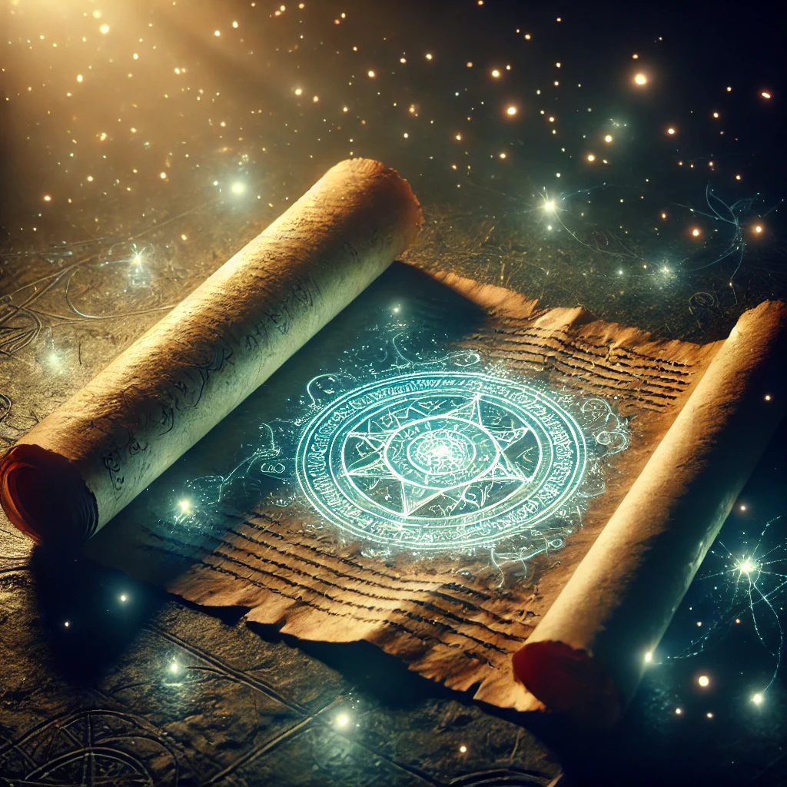

@StarflightTheThinker
"Just a NightWing trying to survive and figure out the truth. Books > Battles."
Followers: 98 | Following: 5
Dev~

üìú "The prophecy‚Ķ is it even real? What if we were lied to?" #NightWingMysteries
üî• "Home‚Ķ I guess? At least it‚Äôs warm (too warm, actually). #DarkSecret"
üêâ "Miss my real friends. Hope they‚Äôre okay. #TeamDragonets"
Close